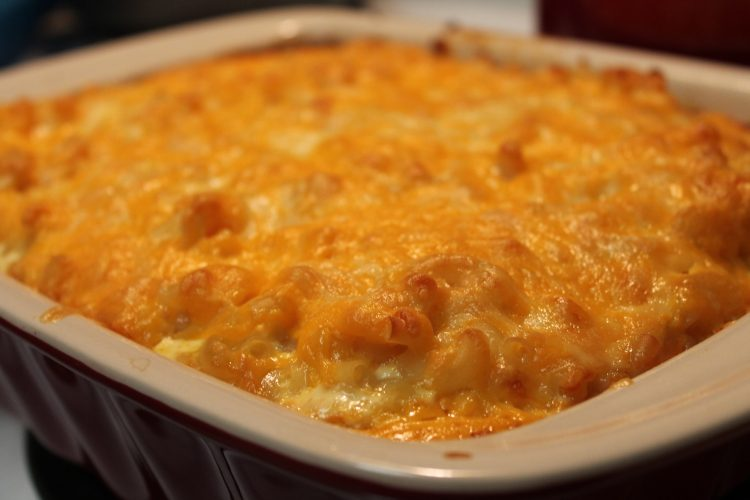

Macaroni Cheese Recipe

Description:
Taste: Cheesy, buttery, and all around just oozing with savory flavors.
Texture: This is the best part of mac & cheese, right? The cheese sauce is oh-so rich, thick, silky, and creamy, the pasta is al dente, and the topping is crisp and crunchy.
Ingredients:
- 1 (8 ounce) package elbow macaroni
- 4 tablespoons butter
- ½ cup grated Parmesan cheese
- 1 onion, chopped
- 2 stalks celery, chopped
- 1 tablespoon all-purpose flour
- ½ teaspoon paprika
- ½ teaspoon prepared mustard
- 1 ½ cups milk
- 1 cup grated Gruyere cheese
- 1 ½ cups shredded Cheddar cheese
- black pepper to taste
Steps:
- Cook macaroni in a large pot of boiling water until al dente. Drain.
- In small pan melt 1 tablespoon butter over medium heat. Add bread crumbs, and stir to coat. Cool, and then mix in Parmesan. Set aside.
- In a medium saucepan, melt 1 tablespoon butter. Saute onions and celery until translucent. Transfer to a bowl.
- In the same saucepan, melt 1 tablespoon butter over medium heat. Whisk in the flour, to make a white roux. Try not to let the roux brown at all, it should be white. Mix in paprika and mustard, then stir in milk. Bring to boil over medium heat, then add Gruyere and Cheddar cheeses. Simmer, stirring often, until thick enough to coat the back of a spoon, about 10 minutes. Season with salt and pepper to taste.
- Preheat the oven to 350 degrees F (175 degrees C). Butter a 9x13 in pan, or similar sized casserole dish. Transfer cooked macaroni to the dish, and toss in the andouille sausage and sauteed vegetables. Stir in the cheese mixture. Sprinkle the breadcrumb and Parmesan mixture evenly over the top.
- Bake for 20 minutes, or until crust turns golden brown.